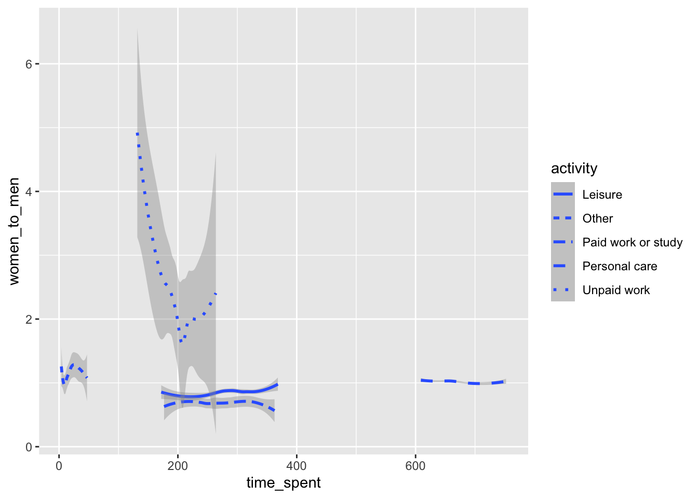

Rows: 165
Columns: 5
$ country <chr> "Australia", "Austria", "Belgium", "Canada", "Denmark", "…
$ activity <chr> "Unpaid work", "Unpaid work", "Unpaid work", "Unpaid work…
$ time_spent <dbl> 243.1689, 202.0000, 191.8202, 186.0000, 216.6273, 196.877…
$ women_to_men <dbl> 1.812398, 1.989696, 1.646106, 1.509785, 1.304469, 1.49728…
$ continent <chr> "Oceania", "Europe", "Europe", "North America", "Europe",…4 Visualization
Tidy data has the following characteristics:
every column represents one variable
every row represents one observation
every cell has one value
We will soon return to the process of “tidying” non-tidy data, but we will begin with tidy data as a given. This chapter is definitely inspired by and roughly based on other chapters, specifically (Wickham and Grolemund 2017) and (Wickham, Çetinkaya-Rundel, and Grolemund 2023). If you would like to solidify the lessons from this chapter, I strongly suggest reviewing (and writing out the code from) those two chapters, as well; they contain the same ideas, but make use of different data.
We will be looking at data from the OECDabout how people in 33 countries spend their time. We will making plots with this data, but first I have to explain what it is.
The data contains five variables (columns). country, continent, and activity are relatively self explanatory, as is women_to_men which is the ratio of how much time women spend on the activity to how much time men spend. time_spent is the number of minutes the average person in country spends, per minutes per day, on the activity.
Categorical data, like activity, country, or continent, are likely to spawn different questions than numerical data, like time_spent, or women_to_men. The first question I have about this data is what activities are represented? We can use the distinct function to answer this question
We can similarly determine which countries are in our data, noting that this data does not represent the entire global population.
If we look at the continents, we can see that there is even an entire continent omitted from our data: South America.
Our end goal is the following plot:
This plot shows the amount of time the average person in each OECD country spends in each of 5 activities. On the y, axis is the ratio of how much time women spend on that activity to how much time men spend on that activity (on average). There is a dashed, horizontal line at \(y=1\) that indicates parity between the two genders. Each plot is a scatter plot with a black regression line and each point is colored and shaped according to the continent of the country it represents. The slope of the regression time tells us whether gender parity increases or decreases with increases in the time spent on the activity. For example, countries in which people do more unpaid work seem to have more gender parity in the amount of unpaid work men and women do.
4.1 Plotting Basics
The first step to making any plot is calling the ggplot function. If you look at the help page for the ggplot function (by typing ?ggplot into an R console) , you will find that it takes 2 arguments: data and mapping. Ggplot expects that the data argument is going to be a data frame with tidy data in.

As you can see, ggplot creates an empty plot. Next, we will add a mapping argument. The mapping will tell ggplot which aesthetics (like the x-axis, y-axis, color, shape, etc.) will be represented by which variables in the data. In this case, we want the time_spent variable on the x-axis and the women_to_men variable on the y-axis, as they appear in the reference plot. When we call the ggplot while providing a data and a mapping argument, R will create a blank plot with axes.
As with any function in R, we do not need to write all of the arguments on a single line. We can separate the arguments onto different lines, as long as we make sure each line ends with a comma or the end parenthesis (i.e., the end of the function call). You may find that the following two code snippets are more readable than the one above, even though all three would produce the same output.
To R, it does not matter whether you type this function call out in 1 line or in 7; it is the same arguments being passed to the same function and thus produces the same result.
4.1.1 Geoms
Our plot is missing something: can you spot it? There is no data on our plot! We represent data in a ggplot by using a geom function. Almost all of these functions start with geom_ (like geom_bar or geom_smooth) or stat_ (like stat_count). You can see a fuller list of the geom functions available on the ggplot2 cheat sheet.
show code for this result

We add a geom by literally adding it (with the + operator) to the ggplot function call. The + always has to go at the end of the line. You can separate the functions by as many empty or commented lines as you’d like. You can also do this within function calls. So, this code will run:
show code for this result

as will this code:
show code for this result

and if you wanted to be really verbose, you could even do something like this:
show code for this result
What is the difference between a mapping and a style? A mapping connects one aesthetic to a variable, but a style just sets the aesthetic. For example, styling our scatter plot might mean turning all the points blue, whereas a mapping would match each activity to a color based on a scale. This is a graph that uses color as a style:
show code for this result
and this is a plot that uses color as a map:
show code for this result
You can put mappings in the ggplot function, or in any geom function. In the above code, the mapping for x and y is in the ggplot function, and the mapping for color is in the geom_point function.
Every geom will inherit the mapping from the ggplot function. If we added another geom to the plot, we could see this. In the plot below, I added the geom_smooth, and - as you can see - it inherits the x and the y aesthetic from the ggplot function, but it does not inherit the color argument from the geom_point function.
show code for this result
`geom_smooth()` using method = 'loess' and formula = 'y ~ x'If you wanted R to make differently colored smooth lines in this plot, you could add a color aesthetic to the geom_smooth function, or you could move the color aesthetic from the geom_point function to the ggplot function, thereby allowing the geom_smooth function to inherit a color aesthetic.
show code for this result
`geom_smooth()` using method = 'loess' and formula = 'y ~ x'Let’s do a little investigating with just the geom_smooth function.
show code for this result
`geom_smooth()` using method = 'loess' and formula = 'y ~ x'We used the color aesthetic to make separate lines above, but we didn’t need to. We can also use the group or linetype arguments to create separate lines
show code for this result
`geom_smooth()` using method = 'loess' and formula = 'y ~ x'show code for this result
`geom_smooth()` using method = 'loess' and formula = 'y ~ x'
We can change the data supplied to geom_smooth to draw only one line:
show code for this result
`geom_smooth()` using method = 'loess' and formula = 'y ~ x'You should use the help page (?geom_smooth) to read more about the aesthetics and arguments the function can take. I will only highlight two more: method, and se. I frequently find myself favoring a linear regression line (rather than the default which uses the LOESS smoothing function (a type of local, polynomial regression). You can get a straight line by changing the method argument to “lm”. The se argument can be set to T or TRUE or F or FALSE, and it controls whether the plot includes an gray error area.
show code for this result
`geom_smooth()` using formula = 'y ~ x'On a completely separate note, you use a very similar process of setting the data and mapping arguments to make a bar chart. Ggplot makes a distinction between a bar chart and a column chart (even though they can appear to be identical). A bar chart has a single, discrete aesthetic mapping (like one that maps x to continent).
show code for this result
A column chart takes 2 mappings: a discrete x aesthetic (like activity) and a continuous y aesthetic (like time_spent).
show code for this result
Bar charts are a great example of the difference between the color and the fill aesthetics. Points and lines have only colors, but bars and columns (and other geoms, like density plots) have fills, as well. Let’s fix the last plot.
show code for this result
This plot does not provide a helpful comparison of the time use in OECD countries across various continents because all of the columns have a different height. In reality, we would like all of the columns to be the same height so we can compare proportions. We can do this using the position argument
show code for this result
This is a better plot to view the differences in OECD time use across continents. However, there is (again) very limited data for several continents which are either missed (i.e., most of Africa, Oceania, South America, and Asia) or have only very few countries (i.e., North America)
4.1.2 Faceting
Using just the ggplot function and a few geom functions, we can get damn near the reference plots we started with.
show code for this result
# initialize plot and axes
ggplot(data = time_use,
mapping = aes(x = time_spent,
y = women_to_men)) +
# add scatter plot
geom_point(mapping = aes(color = continent,
shape = continent)) +
# add black regression line
geom_smooth(color = "black",
size = 2,
method = "lm",
se = FALSE) +
# add dashed parity line (y = 1)
geom_hline(yintercept = 1,
linetype = "dashed")`geom_smooth()` using formula = 'y ~ x'Faceting is tricky to explain in words, but it’s very easy to understand if you can see it.
show code for this result
# initialize plot and axes
ggplot(data = time_use,
mapping = aes(x = time_spent,
y = women_to_men)) +
# add scatter plot
geom_point(mapping = aes(color = continent,
shape = continent)) +
# add black regression line
geom_smooth(color = "black",
size = 2,
method = "lm",
se = FALSE) +
# add dashed parity line (y = 1)
geom_hline(yintercept = 1,
linetype = "dashed") +
# add a facet - activity
facet_wrap(~activity,
nrow = 2)`geom_smooth()` using formula = 'y ~ x'There are two faceting functions: facet_wrap and facet_grid. Both have a scales argument, which is set as “fixed” by default. You can change it to:
“free_x” to allow the x axes to have different limits in the different plots
“free_y” to do the same for the y axes
“free” to have both axes take different limits for each separate plot
In this case, we’ll just set the scales argument to "free" so that all of the data aren’t packed so tightly.
show code for this result
# initialize plot and axes
ggplot(data = time_use,
mapping = aes(x = time_spent,
y = women_to_men)) +
# add scatter plot
geom_point(mapping = aes(color = continent,
shape = continent)) +
# add black regression line
geom_smooth(color = "black",
size = 2,
method = "lm",
se = FALSE) +
# add dashed parity line (y = 1)
geom_hline(yintercept = 1,
linetype = "dashed") +
# add a facet - activity
facet_wrap(~activity,
nrow = 2,
scales = "free")`geom_smooth()` using formula = 'y ~ x'facet_grid is helpful if you would like to facet on two (discrete!) variables at once (like activity and continent in the plot below).
show code for this result
# initialize plot and axes
ggplot(data = time_use,
mapping = aes(x = time_spent,
y = women_to_men)) +
# add scatter plot
geom_point(mapping = aes(color = continent,
shape = continent)) +
# add black regression line
geom_smooth(color = "black",
size = 0.5,
method = "lm",
se = FALSE) +
# add dashed parity line (y = 1)
geom_hline(yintercept = 1,
linetype = "dashed") +
# add a facet - activity
facet_grid(continent ~ activity,
scales = "free")`geom_smooth()` using formula = 'y ~ x'With so few data, such extensive faceting is neither informative nor helpful, so we’ll stick with just one facet: activity.
4.2 Plot Styling
Our current plot is beginning to look very similar to the reference plot we were attempting to recreate. We have written 23 lines so far. To save space, I am going to save the plot that we currently have under the name p. When we call p, R will make the plot. We can also add things to p, just as we added them to the ggplot function.
show code for this result
# save ggplot object under the name "p"
p <- ggplot(data = time_use,
mapping = aes(x = time_spent,
y = women_to_men)) +
# add scatter plot
geom_point(mapping = aes(color = continent,
shape = continent)) +
# add black regression line
geom_smooth(color = "black",
size = 2,
method = "lm",
se = FALSE) +
# add dashed parity line (y = 1)
geom_hline(yintercept = 1,
linetype = "dashed") +
# add a facet - activity
facet_wrap(~activity,
nrow = 2,
scales = "free")
p`geom_smooth()` using formula = 'y ~ x'
4.2.1 Labels
By default, ggplot does not create a title or subtitle for the plot, and it uses the names of the variables for the axes and scales (i.e., color scale in our plot). The labs function allows you to update various text elements in the plot.
show code for this result
`geom_smooth()` using formula = 'y ~ x'Adding labels to the outside of your plot is as simple as that. You could also use labels as a geom using the geom_text function. It takes an additional aesthetic, label that we have not yet seen.
4.2.2 Scales and Coordinates
Our plot is different from the reference plot in which colors it uses. The reference plot uses black, orange, blue, green, and yellow; but, ours uses red, beige, green, blue, and purple. What gives? The reference plot uses a different color scale than does our plot. The color scale is the part of the plot that matches each continent to a unique color. The reference plot uses a color scale from the ggthemes package that is colorblind friendly.
`geom_smooth()` using formula = 'y ~ x'scales also control the x and y axes, specifically continuous scales. We can use a scale function to set the limits or breaks for the axes. In our case, this allows us to demonstrate how much larger the gender disparity appears to be for unpaid work rather than for any of the other (measured) uses of time.
`geom_smooth()` using formula = 'y ~ x'we can use scale functions to add transformations, as well. There are functions like scale_x_sqrt and scale_x_log10 that put the data on square root or log axes. Our time use data is not a great example of the utility of these types of axes. Instead, look at this data about coffee production:
show code for this result
`geom_smooth()` using formula = 'y ~ x'The coffee data is dominated by small producers - with many populations and productions below 10 million people and pounds. The relationship between the variables is obscured by the clumping of data, which is caused by the massive outliers of Brazil (massive production) and India (massive population). A log-log plot (with log axes on the x and y) reveals a different perspective on this data. You must be careful, however, because log axes are not incredibly easy for most people to read, and the essentially everyone (including those that can read log-log scales) expects the scales on a plot to be linear unless explicitly warned otherwise.
`geom_smooth()` using formula = 'y ~ x'There are many more transformations the scale functions can perform (like a boxcox, or logit transform), and you can see a fuller list in the documentation of the scale_x_continuous function (or any of the continuous scale functions). Okay; bye, coffee data!
We can finally use scales functions to control the labels on the axes. I find this is particularly helpful if you have percentages on one axis. We have a proportion, which can be represented as a percentage.
4.2.3 Themes
The plot we have still doesn’t look quite like the reference plot we aimed toward. This can be explained by a difference in theme. The reference plot uses the minimal theme, whereas ours uses the default theme. We can “fix” that by using the theme_minimal function.
You can see the other default themes by seeing the help page for theme_minimal (i.e., ?theme_minimal, which is also the help page for the other built-in ggplot themes). My other favorite is theme_classic.
I also use theme_void, but typically only when making pie charts. theme_void removes most of the elements in the plot, including the x and y axes and gridlines.
4.2.4 Guides, Legends, and Text
Although it makes no sense not to have it in this case, there are some cases in which you would like to remove the legend, which appears to the right of the plot by default. There are two ways to do this, using guides or using theme.
guides is a function that is occasionally helpful for specifying which type of scale variables should be mapped to. You could set the guide to the color and/or shape arguments to “none” to remove one or both aspects of the legend.
You could also remove the legend, instead of removing variables from the legend. You would do this using the legend.position argument in the theme function.
`geom_smooth()` using formula = 'y ~ x'You could also move the legend around using the legend.position argument.
`geom_smooth()` using formula = 'y ~ x'
Finally, you can use the theme function to make really specific changes to the plot, like changing the angle of the numbers of the y-axis